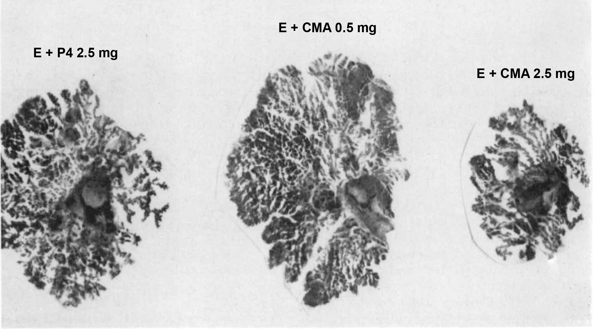

Literature on Early Progestogen Exposure and Breast Development
By Aly | First published July 21, 2019 | Last modified March 31, 2024
Preface
This is a sources and excerpts supplement for the main article section which can be found here.
Animal Studies
Lyons & McGinty (1941)
Lyons, W. R., & McGinty, D. A. (1941). Effects of estrone and progesterone on male rabbit mammary glands. I. Varying doses of progesterone. Proceedings of the Society for Experimental Biology and Medicine, 48(1), 83–86. [DOI:10.3181/00379727-48-13227]:
Summary. Eighteen doses of 0.25, 1.0, 4.0 and 8.0 I.U. of crystalline progesterone were given, simultaneously with 120 I.U. of estrone, to immature male rabbits during a period of 4 weeks. Of these 4 levels of progesterone, the 1.0 I.U. dose synergized best although the prolactational proliferation induced was not maximal. The 4.0 and 8.0 I.U. doses of progesterone were apparently inhibiting as shown by the relatively poor mammary growth obtained.
[Introduction.] Turner and Frank1 showed that whereas estrogen caused growth of the duct system and slight lobule proliferation in the male rabbit mammary gland, the combination of estrogen and progestogen caused lobule-alveolar growth simulating that seen in pregnancy. The hormones used were impure, but were assayed for rat units of estrogen and rabbit units of progestogen and judged by the results, were uncontaminated, one with the other. Until recently few investigators have had at their disposal sufficient progesterone with which to investigate this problem further, and, as, far as we are aware, the doses of estrone and progesterone that will synergize best to cause optimal mammary growth have not as yet been satisfactorily determined in any animal form. In the preliminary investigation reported herein, an attempt was made to determine the approximate dose of progesterone that would function optimally with a given daily dose (120 I.U.) of estrone in causing prolactational* growth of the male rabbit mammary gland.
Experimental. Immature, New Zealand White male rabbits weighing approximately 1.5 kg at the beginning of the experiment were treated in groups of 3 with 18 daily doses (Monday through Friday, from 2/28/39 until 3/23/39) of the following:
Group 1, 120 I.U. of estrone (theelin); Group 2, 1 I.U. of progesterone; Group 3, 120 I.U. of E and 0.25 I.U. of P; Group 4, 120 I. U. of E and 1 I.U. of P; Group 5, 1201 I.U. of E and 4 I.U. of P; Group 6, 120 I.U. of E and 8 I.U. of P. The 2 hormones were given separately, subcutaneously, in peanut oil. On 3/28/39, 5 days after the last injection, a biopsy specimen of the second left (thoracic) mammary gland was taken from each animal, fixed in formol, stained in toto with alum-carmine and cleared in methyl salicylate.
Results. The maniniary spreads from Group 1, showed that the dose of 120 I.U. of E produced good duct growth with almost negligible alveolar formation (Fig. 2 [E Alone]). Those from Group 2 (1 I.U. of P) showed but little more development than that seen in normal immature rabbit glands (Fig. 1 [Untreated]). The duct system of the glands from animals in Group 3 (120 I.U. of E plus 0.25 I.U. of P) was as extensive as that seen in animals treated with 120 I.U. of E alone, but the main ducts were narrower and, as though in compensation. more alveolar buds were present. Thus, just as progesterone in some experimental animals prevents the estrogen-induced uterine dilatation and stimulates a proliferation of luminal and glandular epithelium, so also in the rabbit it counteracts an estrogen-induced mammary duct dilatation and permits instead an extensive alveolar proliferation. The amount of incomplete lobule formation shown in Fig. 3 [E + P4 0.25 mg] was found typical of all rabbits in this group and probably may be interpreted as barely minimal prolactational proliferation in response to a low dose of progesterone. The glands from animals in Group 4 (120 I.U. of E and 1.0 I.U. of P) showed the best evidence of synergism obtained in this preliminary experiment (Fig. 4 [E + P4 1 mg]), although judged on the basis of a set of glands taken at different stages of pregnancy, they could not be said to show maximal prolactational proliferation. Interesting results were obtained in Groups 5 and 6, where 2 of the animals in Group 5 and all in Group 6 showed only scanty alveolar development and an inhibition of the duct growth (Fig. 5 [E + P4 8 mg]). The third animal in Group 5 showed good prolactational development with no inhibition of duct growth, indicating that 4 I.U. of progesterone approximated the border-line inhibiting dose when given with 120 I.U. of estrone by this particular routine.
All figures represent approximately one-half of a male rabbit mammary spread fixed in formol and stained in alum-carmine. × 1.5.
Treatment was as follows:
FIG. 1. None. Control gland. [Untreated]
FIG. 2. 18 subcutaneous doses of 120 I.U. estrone in oil over a 28-day period. Duct growth with almost no alveolar development. [E Alone]
FIG. 3. 18 subcutaneous doses of 120 I.U. estrone and 0.25 I.U. progesterone over same period. Very little prolactational proliferation. [E + P4 0.25 mg]
FIG. 4. 18 subcutaneous doses of 120 I.U. estrone and 1 I.U. progesterone over same period. Fair prolactational proliferation. [E + P4 1 mg]
FIG. 5. 18 subcutaneous doses of 120 I.U. estrone and 8 I.U. progesterone over same period. Inhibited duct growth and only slight alveolar development. [E + P4 8 mg]
{kind=link}
Note: A citing review indicated that 1 IU progesterone is equal to 1 mg progesterone (Pfeiffer, 1943).
Beyer, Cruz, & Martinez-Manautou (1970)
Beyer, C., Cruz, M. L., & Martinez-Manautou, J. (1970). Effect of Chlormadinone Acetate on Mammary Development and Lactation in the Rabbit. Endocrinology, 86(5), 1172–1174. [DOI:10.1210/endo-86-5-1172]:
ABSTRACT. The effect of chlormadinone acetate (CA) on mammary growth and lactation was studied in the New Zealand white rabbit. Mammary development studies were performed in 5-month males castrated prepuberally. All rabbits were treated for 28 days. Ten μg estrone (E) produced good ductal development without alveolar growth (mean mammary area = 376 mm2). CA alone did not stimulate mammary growth. Administration of 0.5 mg CA plus 10 μg E produced optimal ductal and alveolar development (mean mammary area = 765 mm2). By contrast, a larger dose of CA (2.5 mg) combined with 10 μg E resulted in a much smaller mammary response (mean mammary area = 284 mm2). Administration of 100 μg or 2.5 mg CA from day 10 to 25 of lactation neither inhibited nor facilitated milk production in lactating rabbits. It is concluded that prolonged administration of CA when combined with estrogen stimulates mammary growth at moderate doses (0.5 mg) and inhibits it at large doses (2.5 mg). CA has no clear effect on milk production and/or removal in lactating rabbits. (Endocrinology 86: 1172, 1970)
[Introduction]
CHLORMADINONE acetate (CA) is a potent progestational steroid widely employed in controlling human fertility (1). It has been reported that prolonged treatment with some progestational compounds can alter mammary structure and lactation in some mammalian species, including women (2). Yet no detailed study has been done on the action of CA on the mammary gland. Therefore, we considered it interesting to analyze the effect of prolonged administration of CA upon mammary growth and lactation in New Zealand white rabbits.
Results
The mammary glands of the control castrated males were not visible. When studied microscopically, they were found to consist of short primary ducts that hardly extended beyond the nipple area. Injections of 500 μg CA did not stimulate mammary growth. Administration of 10 μg E induced clear growth and ramification of the ductal system. The mean area (376 ± 41 mm2 SE) occupied by these glands was significantly larger than in the control or CA treated rabbits. These glands were composed exclusively of ductal epithelium without alveoli. Combined administration of 10 μg E and 2.5 mg progesterone (P) resulted in a good ductoalveolar development. As can be seen in Fig. 1A [E + P4 2.5 mg] the ducts were almost covered with alveoli. The area occupied by these glands was significantly larger than that of the E treated rabbits (688 ± 77 mm2 SE, group 3 vs. 4, p = .004, U test). No milk secretion was noted. Administration of both E and CA at the low dose level (0.5 mg) produced marked ducto-alveolar development (Fig. 1B [E + CMA 0.5 mg]). The mammary area in these animals was more extended than in all other treated groups (765 ± 358 mm2 SE) but also no mammary secretion was observed. Injections of E plus 2.5 mg CA resulted in a dramatic reduction in mammary extension (284 ± 38 mm2 SE), when compared with the effects obtained with the low dose of CA (group 5 vs. group 6, p = .004, U test). Limited ductal extension and ramification was noted, though alveolar development existed (Fig. 1C [E + CMA 2.5 mg]).
 FIG. 1. Whole mounts of mammary glands showing development after diverse treatments: A) estrone (10 μg) plus 2 mg progesterone [E + P4 2.5 mg]; B) estrone (10 μg) plus 0.5 mg chlormadinone acetate [E + CMA 0.5 mg]; C) estrone (10 μg) plus 2.5 mg chlormadinone acetate [E + CMA 2.5 mg]. Note that the large dosage of chlormadinone acetate resulted in poor development of the ductal system.
{kind=link}
Discussion
Our observations indicate that CA alone does not exert any clear effect on mammary gland growth. Similarly, P per se lacks stimulatory effects on mammary development in the gonadectomized rabbit (3). On the other hand, when low doses of CA (0.5 mg) were combined with E, maximal ducto-alveolar development occurred. The development of these glands was comparable to that observed in late pregnancy in the rabbit. The fact that the mammary growth obtained with 0.5 mg CA plus E was greater than that found after combination of P and E agrees with the observation that CA is a more potent progestational agent than P (4).
[…] It is interesting that CA in large doses inhibited mammary growth. Similarly, Lyons and McGinty (7) reported an inhibitory effect of large dosages of P (8 mg) in the intact male rabbit treated with estrogen. This inhibitory effect is probably due to the antiestrogenic action of these compounds (8).
In summary, prolonged administration of CA, when acting on an estrogenic background, might influence mammary development in the rabbit, stimulating it at moderate and inhibiting it at high doses. By contrast, CA has no significant effect on milk production or removal.
Clinical Publications
Zacharin (2000)
Zacharin, M. (2000). Use of androgens and oestrogens in adolescents - A review of hormone replacement treatment. Journal of Pediatric Endocrinology and Metabolism, 13(1), 3–12. [DOI:10.1515/JPEM.2000.13.1.3]:
Progestogen is not required for induction of puberty. Cyclical progestogen should be added when the oestradiol dosage reaches the equivalent of 15 μg/day of ethinyl oestradiol, at which time breakthrough bleeding is almost inevitable, or earlier if vaginal bleeding has already occurred.
Emans (2005)
Emans, S. J. (2005). Delayed Puberty. In Emans, S. J., Laufer, M. R., Goldstein, D. P. (Eds.). Pediatric & Adolescent Gynecology, 5th Edition (pp. 181–213). Philadelphia: Lippincott Williams & Wilkins. [Google Scholar] [Google Books] [WorldCat] [Archive.org]:
Oral contraceptives are not recommended for initial therapy because they contain progestin throughout the cycle, which is not a physiologic approach to the induction of normal breast development. During normal puberty, there is a long period of unopposed low levels of estrogen until ovulatory cycles begin (see Chapter 4). There has been speculation that particular doses of progestin or estrogen may be more likely to lead to tubular breasts, but a randomized study has not been done.
[…] The timing of the introduction of progestin varies among centers. Although in the past some girls received unopposed estrogen daily until breakthrough bleeding occurred, we believe that this method should be discouraged because adolescents benefit from a predictable onset of menses, and many girls experience significant dysfunctional bleeding that may require intervention. We suggest the addition of a short course of progestin (5 or 10 mg of medroxyprogesterone) to the continuous estrogen within 2 to 3 months of the Phase 2 increase in dose: e.g., daily estrogen plus medroxyprogesterone 10 mg each day for the first 5 days of each month. This dose of progestin is used only until breast development is completed over the next 6 months and then the dose of progestin is increased to 10 days and ultimately to 12 to 14 days for optimal protection of the endometrium if long-term hormone replacement is planned.
Bondy et al. (2007)
Bondy, C. A., & Turner Syndrome Consensus Study Group. (2007). Care of girls and women with Turner syndrome: a guideline of the Turner Syndrome Study Group. The Journal of Clinical Endocrinology & Metabolism, 92(1), 10–25. [DOI:10.1210/jc.2006-1374]:
To allow for normal breast and uterine development, it seems advisable to delay the addition of progestin at least 2 yr after starting estrogen or until breakthrough bleeding occurs. The use of oral contraceptive pills to achieve pubertal development is best avoided, because the synthetic estrogen doses in most formulations are too high and the typical synthetic progestin may interfere with optimal breast and uterine development.
Colvin, Devineni, & Ashraf (2014)
Colvin, C., Devineni, G., & Ashraf, A. P. (2014). Delayed Puberty. In Bandeira, F., Gharib, H., Golbert, A., Griz, L., & Faria, M. (Eds.). Endocrinology and Diabetes (pp. 203–217). New York: Springer. [DOI:10.1007/978-1-4614-8684-8_17]:
Initial therapy is with estrogen alone to maximize breast growth and to induce uterine and endometrial proliferation. Adding a progestin prematurely or administering combinations of estrogens and progestins early on may reduce ultimate breast size. Progestin is added to mimic the normal menstrual cycle after breast growth ceases (when full contour breast growth plateaus) or menses occur.
Wierckx, Gooren, & T’Sjoen (2014)
Wierckx, K., Gooren, L., & T’Sjoen, G. (2014). Clinical review: breast development in trans women receiving cross-sex hormones. The Journal of Sexual Medicine, 11(5), 1240–1247. [DOI:10.1111/jsm.12487]:
The available evidence does not provide support for better effects on breast size of adding progestogens to cross-sex hormone administration in trans women as suggested by some authors [14,18,48–51]. However, it should be said that the quality and amount of available evidence are extremely poor and hamper any firm conclusion at this moment. Also, many centers use antiandrogens with some progestational action and complicate the available evidence. In addition, some occasionally use progestins to lower testosterone levels after maximum estrogen levels when a patient cannot tolerate an estrogen-based regimen, abnormal psychological irritability, and mammary tenderness [52,53]. Furthermore, all progestogens by definition have some progestational activity, but they differ in chemical structure, metabolism, pharmacokinetics, affinity, potency, and efficacy via steroid receptors and intracellular action. All these differences can translate into very different biological and clinical effects and advocate the absence of a class effect of progestogens [54].
Nevertheless, breast development in trans women might be similar as in cisgender women indicating a major role for estrogen rather than progesterone in the early stages of breast development. The central role of estradiol in initiating breast growth at puberty is revealed by the poor-developed breast of estrogen receptor-alpha knockout mice [55], whereas progesterone knockout mice showed to have a morphologically indistinguishable ductal architecture from wild-type virgin mice [56]. Moreover, during pubertal induction in girls, early administration of progesterone is not recommended as premature initiation of progestin therapy can compromise ultimate breast growth [57]. It is however of note that progesterone is known to be an important determinant of the histology of the breast in cis women. When the mammary epithelial of the progesterone knockout mouse is transplanted into a wild-type parous mouse, the obligatory role of progesterone in acinar and lobular development is demonstrated [58,59]. Additionally, other theoretical advantages of progesterone administration might be the fact that breast epithelium exhibits maximal proliferation in the luteal phase of menstruation, when progesterone levels are at their highest [60] and increased mammographic breast density is observed when progestogens are administered [61]. However, importantly, there is no evidence that these histological and mammographic differences result in clinically significant breast size differences. Another consideration is that the increased breast density by progestogens rapidly decreases after hormone withdrawal [62], which raises the question how long progestogens then should be prescribed.
Kaiser & Ho (2015)
Kaiser, U., & Ho, K. K. (2015). Pituitary Physiology and Diagnostic Evaluation. In Melmed, S., Polonsky, K. S., Larsen, P. R., Kronenberg, & H. M. (Eds.). Williams Textbook of Endocrinology, 13th Edition (pp. 176–231). Philadelphia: Elsevier. [DOI:10.1016/B978-0-323-29738-7.00008-3] [Google Books]:
Sex Steroid Replacement Therapy. Estrogen or testosterone replacement is required for inducing and maintaining primary and secondary sexual characteristics [in patients with delayed puberty due to hypogonadism], […] Initial therapy should consist of estrogen alone to maximize breast growth and to induce uterine and endometrial proliferation. […] A progestin eventually needs to be added to prevent endometrial hyperplasia but should be avoided before completion of breast development, because it is likely to reduce ultimate breast size.
Bauman, Novello, & Kreitzer (2016)
Bauman, A., Novello, L., & Kreitzer, P. (2016). Endocrine Disorders and Delayed Puberty. In Appelbaum, H. (Ed.). Abnormal Female Puberty: A Clinical Casebook (pp. 87–107). Cham: Springer. [DOI:10.1007/978-3-319-27225-2_5]:
Depending upon when ovarian failure occurs, it may also be necessary to assist in the completion of puberty if pubertal progression was interrupted. If the breasts are not fully developed, lower doses of estrogen replacement must be initiated to allow for pubertal progression. Estrogen is gradually increased to adult or maintenance replacement dosing and then progesterone is added to protect the endometrium from long-term complications associated with unopposed estrogen. Pubertal induction is initiated with estrogen treatment alone followed by the sequential addition of progesterone. Progesterone is added sequentially, rather than concomitantly, in order to allow for estrogen to independently stimulate normal breast development because early progesterone exposure to the breast tissue can result in tubular breast formation [12].
To induce puberty, the patient will first receive low-dose estrogen, which can be given orally or transdermally. The dose is increased slowly over 2 years. This allows the patient to undergo the physical changes of puberty, including breast development. The slow increase of estradiol will also provide the opportunity for continued vertical growth. After about 12–24 months of unopposed estrogen, or if a patient experiences vaginal bleeding, she is given progesterone in cycles [47]. If the progesterone is given too early, it may result in breast deformity, but it must be started once the patient develops a uterine lining to prevent endometrial hyperplasia [40].
Gawlik et al. (2016)
Gawlik, A., Hankus, M., Such, K., Drosdzol-Cop, A., Madej, P., Borkowska, M., Zachurzok, A., & Malecka-Tendera, E. (2016). Hypogonadism and sex steroid replacement therapy in girls with Turner syndrome. Journal of Pediatric and Adolescent Gynecology, 29(6), 542–550. [DOI:10.1016/j.jpag.2016.03.005]:
It is advisable to delay the addition of progestin [in hypogonadal cisgender girls] by at least 2 years or until breakthrough bleeding occurs, so as to enable normal breast and uterine development.
Randolph (2018)
Randolph, J. F. (2018). Gender-affirming hormone therapy for transgender females. Clinical Obstetrics and Gynecology, 61(4), 705–721. [DOI:10.1097/GRF.0000000000000396]:
The use of progesterone, or progestins, to enhance breast development is controversial and not based on any reliable evidence. Although there are many anecdotal reports of breast growth with the addition of such agents to estrogen therapy in transwomen, no objective clinical trials are available to provide guidance on choice of medication, dose, duration, or response rate. Extrapolation from the experience in inducing breast growth in adolescent girls with absent or delayed pubertal development suggests that simultaneous initial administration of progestins with estrogen may result in abnormal and limited growth due to the simultaneous induction of ductal proliferation and terminal lobular differentiation. It is therefore recommended to initiate breast growth with estrogen alone until stability is reached with a consideration for trial of progesterone/progestin at that time. The risks of long-term progesterone/progestin therapy are unknown in transwomen. […] In view of the known course of development in normal puberty, and a description of abnormal breast growth with the early addition of progestins, it seems prudent to hold off on adding progesterone/progestin therapy until initial estrogen-induced ductal growth is complete.
Donaldson et al. (2019)
Donaldson, M., Kriström, B., Ankarberg-Lindgren, C., Verlinde, S., van Alfen-van der Velden, J., Gawlik, A., van Gelder, M. M. H. J., & Sas, T. (2019). Optimal pubertal induction in girls with Turner syndrome using either oral or transdermal estradiol: a proposed modern strategy. Hormone Research in Paediatrics, 91(3), 153–163. [DOI:10.1159/000500050]:
In contrast to the Cincinnati guidelines [12], advice from gynaecology and reproductive endocrine colleagues indicated that oral progesterone should not be given pre-emptively after 2 years, or automatically at the time of the first breakthrough bleed. Instead, to allow maximum time for uterine and breast development with unopposed estrogen, it was recommended that pubertal staging and where possible pelvic ultrasound examination should be carried out at the time of bleeding so that uterine size and endometrial thickness could be determined. In cases where the endometrium is still thin and the uterus relatively small, progesterone treatment should be deferred, but introduced if ultrasound shows a mature uterus with thick endometrium.
Heath & Wynne (2019)
Heath, R. A., & Wynne, K. (2019). [Chapter 6:] Children and Adolescents. In Heath, R. A., & Wynne, K. A Guide to Transgender Health: State-of-the-art Information for Gender-Affirming People and Their Supporters (pp. 87–106). Santa Barbara: Praeger/ABC-CLIO. [Google Books]:
In young people assigned female at birth, the first sign of estrogen exposure is usually the development of breast buds that slowly progress toward a mature breast size and shape. The beginning of breast development coincides with a growth spurt and an increase in body fat. Hair develops gradually in the armpits and pubic region. The menstrual cycle indicated by monthly periods usually starts around two years later, after breast growth is well underway. During puberty, progesterone is not made until the ovaries have started to produce eggs, at a point when breast development has finished.
Heath, R. A., & Wynne, K. (2019). [Chapter 7:] Hormone and Surgical Therapies for Adults. In Heath, R. A., & Wynne, K. A Guide to Transgender Health: State-of-the-art Information for Gender-Affirming People and Their Supporters (pp. 107–146). Santa Barbara: Praeger/ABC-CLIO. [Google Books]:
Progesterone is not involved in breast development in cisgender females. The levels of progesterone only increase late in puberty when breast development is complete.28 Progesterone is therefore not included in the initiating hormonal regimens for young cisgender women who have not spontaneously entered puberty.29 Neither does the current available evidence suggest that progestins enhance breast development for transgender women. However, there is insufficient high-quality evidence to form an absolute conclusion regarding the usefulness of progestins, and some Internet resources and clinical services still recommend their use.
These excerpts are somewhat inaccurate though—menarche occurs on average during Tanner breast stage 4, and in the first year after menarche a minority of cycles are ovulatory, resulting in significant although intermittent progesterone exposure (Aly, 2020).
Iwamoto et al. (2019)
Iwamoto, S. J., Defreyne, J., Rothman, M. S., Van Schuylenbergh, J., Van de Bruaene, L., Motmans, J., & T’Sjoen, G. (2019). Health considerations for transgender women and remaining unknowns: a narrative review. Therapeutic Advances in Endocrinology and Metabolism, 10, 2042018819871166. [DOI:10.1177/2042018819871166]:
Pubertal data in people assigned female at birth (AFAB) (e.g. girls with Turner syndrome) argue for delaying progesterone as it causes ductal differentiation and may interfere with optimal breast development.68
Crowley & Pitteloud (2020)
Crowley, W. F., & Pitteloud, N. (2020). Approach to the patient with delayed puberty. UpToDate. [Google Scholar] [URL]:
The initial estradiol doses used are below those required to induce menstruation. We add cyclic progestin therapy after two years of estradiol or when breakthrough bleeding occurs on unopposed estradiol. Our first choice for progestin therapy is oral micronized progesterone 200 mg days 1 to 12 of the calendar month. The progestin should not be added until there is substantial breast development that is not solely confined to the areolae and full contour breast growth has plateaued, because premature initiation of progestin therapy can compromise ultimate breast growth.
Naseem, Lokman, & Fitzgerald (2021)
Naseem, H., Lokman, M., & Fitzgerald, C. (2021). Management of congenital hypogonadotropic hypogonadism in females. Human Fertility, advance online publcation. [DOI:10.1080/14647273.2021.1998929]:
The aims of pubertal induction in CHH, are to achieve timely secondary sex characteristics which include breast and uterine development, to attain projected final height, acquire peak bone mass, optimise reproductive potential and maintain psychological well-being. It is important to recognise that randomised controlled trials on hormonal treatment in CHH are scarce, and data on clinical observational studies are also limited. Primary variables to determine the dose of hormone replacement therapy are age, patient satisfaction and clinical response.
Most breast development occurs in the two years of unopposed oestrogen prior to menarche. It has been stated that progesterone should be deferred until after adequate development of breast and uterus are achieved or with first breakthrough bleeding (Shifren, Gass, & NAMS Recommendations for Clinical Care of Midlife Women Working Group, 2014). However, if at first breakthrough bleed, B4 breast development or mature sonographic uterine dimensions have not been achieved, a rational approach is to slightly reduce oestradiol dose whilst continuing to defer progesterone treatment. Cyclical progestogens found in pre-packed preparations for post-menopausal women can be used or prescribed separately for 12 to 14 days in each cycle.
The combined oral contraceptive pill’s (COCP) relatively higher dose of oestrogen and progestogen in early puberty would disrupt breast development causing breast hypoplasia, leading to early epiphyseal closure and reduced bone mass (Matthews et al., 2017). Although COCP is commonly used as HRT after puberty, its use is not endorsed by the European Consensus Guidelines for CHH, which instead recommends oestradiol-based HRT (Boehm et al., 2015). Evidence suggests that COCP does not provide optimal oestrogen replacement in young women postpuberty and the use of COCP represents inadequate treatment in these women (O’Donnell et al., 2012; Swee et al., 2019).
Federici et al. (2022)
Federici, S., Goggi, G., Quinton, R., Giovanelli, L., Persani, L., Cangiano, B., & Bonomi, M. (2022). New and Consolidated Therapeutic Options for Pubertal Induction in Hypogonadism: In-depth Review of the Literature. Endocrine Reviews, 43(5), 824–851. [DOI:10.1210/endrev/bnab043]:
Induction of puberty in females
In females, adequate maturation of secondary sex characteristics is achieved with estrogen alone, while the main role of progesterone is to prevent endometrial hyperplasia. Indeed, clinical experience suggests that premature treatment with a progestogen may be deleterious to both final breast and probably also final uterine maturation.
In summary, treatment should be initiated with a starting dose of approximately 10% of the adult replacement dose and increased (by increments of of 1.5 to 2-fold) every 6 months over a 2 to 3-year period (or less in older adolescents or young women). After at least 2 years of unopposed oestrogen, or if more than one episode of significant breakthrough bleeding occurs, it is necessary to consider a progestin to induce withdrawal bleeding, but only if adult breast and uterine conformation has been achieved. We recommend that, if symptoms of endometrial hyperplasia develop when breasts or uterus are not yet fully developed, then a slight reduction in 17β-E2 dose should be considered instead of introducing the progestin, although we acknowledge the lack of direct evidence. However, in recognition that physiologically progesterone levels only rise substantially in the late stages of puberty (174), when ovulatory cycling becomes effective, and that it plays a role in both the breast and the uterus (175), it seems to us that following this approach that aims to recapitulate normal physiology represents the path of lowest risk.
Lucien et al. (2022)
Lucien, J. N., Ortega, M. T., Calvert, M. E., Smith, C., White, X., Rogers, H., Mosley, B., Agrawal, R., Drude, A., McGee, C., George, M., Brown, A., Downey, K., Wild, C., Njunge, A., Kuzmiak, C. M., Zava, D., Zava, T., Pollard, J., Francis, J., Beery, B. L., Harlin, M., Gonzalez, G. R., & Shaw, N. D. (2022). The Launch of A Girl’s First Period Study: Demystifying Reproductive Hormone Profiles in Adolescent Girls. Journal of Pediatric and Adolescent Gynecology, 35(4), 420–425. [DOI:10.1016/j.jpag.2021.12.018]:
Does exposure to low levels of [progesterone (P4)], as occurs before menarche, during anovulatory cycles with some degree of follicle luteinization, and during early, immature ovulatory cycles play an important role in normal breast development during puberty? This question has important clinical implications as hormone replacement during puberty does not typically include low-dose P4; rather, it is conducted using a staggered approach of estrogen-only therapy followed by the addition of full adult doses of exogenous P4 only after 2 years or when breakthrough bleeding occurs.27 This is done to avoid development of tubular breasts, although there are limited data linking early P4 exposure to suboptimal breast development.28
Rothman & Iwamoto (2022)
Rothman, M. S., & Iwamoto, S. J. (2022). Feminizing Gender-Affirming Hormone Therapy: Special Considerations for Older Adults. In Davis, T. F. (Ed.). A Case-Based Guide to Clinical Endocrinology (pp. 513–523). Cham: Springer International Publishing. [DOI:10.1007/978-3-030-84367-0_58]:
What Role Does Progesterone Have in Breast Development and Feminizing GAHT?
Although progesterone does not appear in feminizing GAHT recommendations in WPATH or the Endocrine Society clinical practice guidelines, many patients have questions surrounding its role in breast growth. We lack evidence for beneft from progesterone [6] in transfeminine patients although its use has been advocated for by some [7]. Much of what we know about progesterone’s risks and benefts come from data in cisgender female populations. In cisgender girls, early use of progesterone may lead to premature ductal differentiation and may be suboptimal for breast growth (e.g., Turner syndrome) [8]. […] Studies exploring progesterone’s impact on breast development have not found a difference in breast growth or referrals for breast augmentation surgery when progestins are added to estrogen treatment relative to estrogen alone [6]. In JD’s case, we would encourage her to start with estrogen and spironolactone and then reassess goals for breast growth after 1–2 years on this regimen.